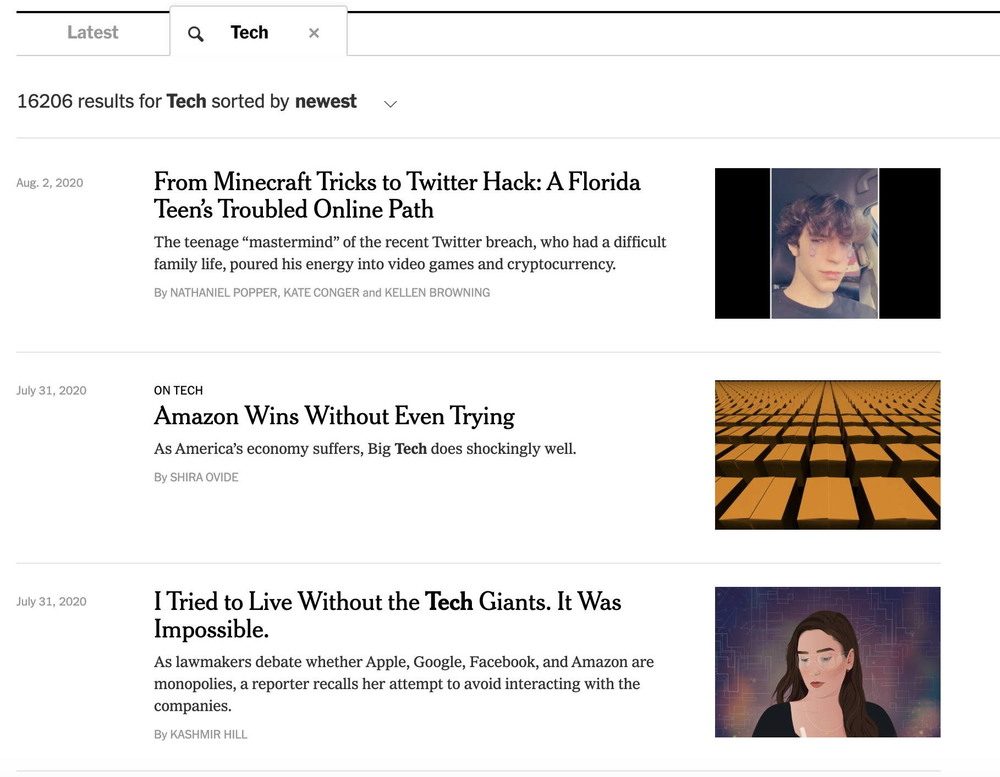
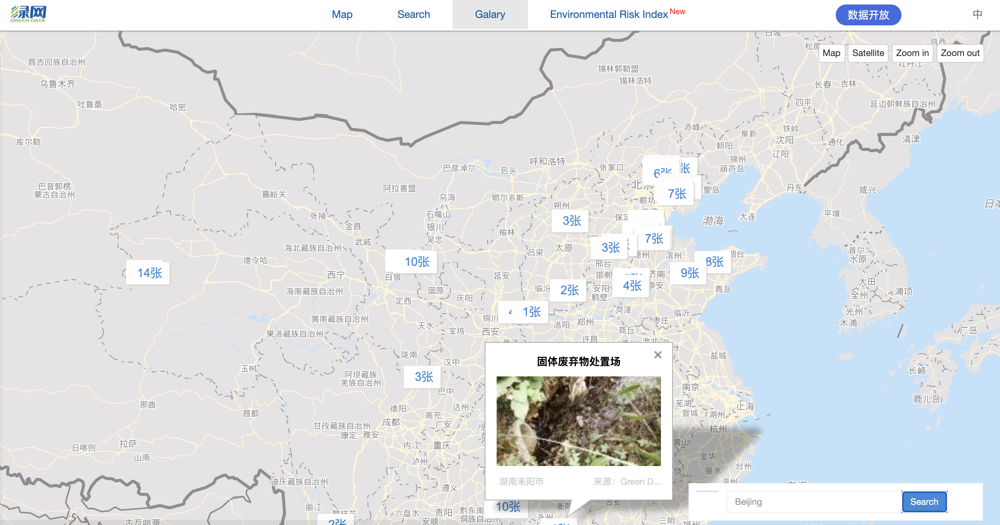

• Built a cloud-hosted stock-recommendation web system based on React, Node.js, Express and MySQL.
• Preprocessed Stock financial indicators and daily prices datasets from Kaggle, removed null records and redundant
attributes, populated relational database supporting BCNF on AWS RDS.
• Designed webpages with HTML, CSS and JavaScript, integrated with Bootstrap for UI improvements.

• Developed a Java news search engine which enables user to discover and search for news based on specific keywords and
categories, integrated with Autocomplete capabilities.
• Implemented components including crawler to parse RSS and HTML web documents with JSOUP, indexer to process pages into
inverted index with TF-IDF calculation and map-reduce technique for time optimization.

• Built scalable web crawlers under Scrapy framework in Python to gather nationwide environmental data.
• Optimized parsing web pages by tailoring codes with different webpage settings and fetched 10k+ enterprise pollution
data per province with 30% improvement of efficiency.
• Populated and processed crawled data with SQL queries and figured out 100+ illegally polluting factories.